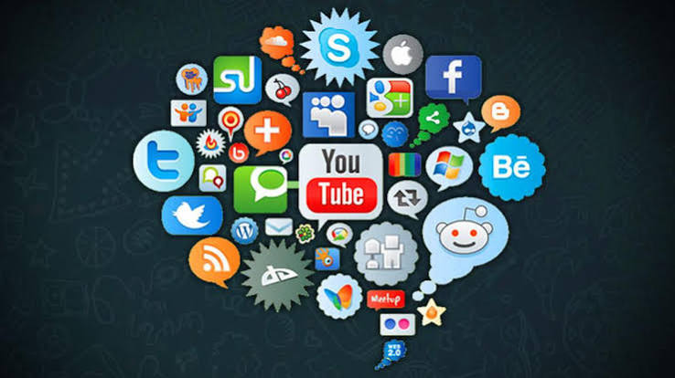
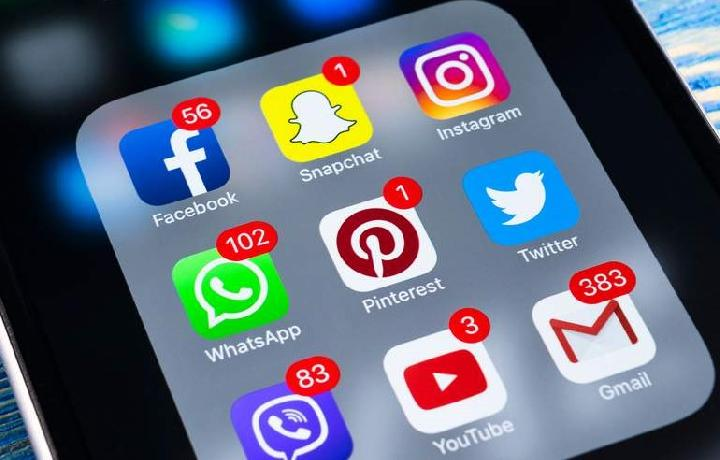

Apa Itu Media Sosial?
Media sosial adalah salah satu perkembangan teknologi yang digunakan untuk berkomunikasi dan berbagi informasi dengan orang lain. Saat ini, media sosial sudah menjadi bagian dari kehidupan sehari-hari, terutama bagi remaja. Melalui media sosial, kita dapat berkomunikasi dengan teman dan keluarga, mendapatkan informasi, mencari hiburan, serta membagikan berbagai hal. Namun, media sosial harus digunakan dengan bijak agar memberikan manfaat dan tidak menimbulkan masalah.


Gunakan Media Sosial dengan Bijak
Salah satu cara menggunakan media sosial dengan benar adalah dengan memperhatikan apa yang kita unggah. Sebelum mengunggah foto, video, atau tulisan, kita harus memikirkan dampaknya bagi diri sendiri dan orang lain. Kita juga sebaiknya tidak membagikan informasi pribadi seperti alamat rumah, nomor telepon, atau kata sandi kepada orang lain. Menjaga privasi merupakan hal yang penting agar kita dapat menggunakan media sosial dengan lebih aman.
Selain menjaga privasi, kita juga harus menggunakan bahasa yang sopan ketika berkomentar. Setiap orang dapat memiliki pendapat yang berbeda, sehingga kita harus tetap menghargai orang lain. Kita tidak boleh menggunakan media sosial untuk menghina, menyebarkan kebencian, atau membuat orang lain merasa tidak nyaman. Dengan bersikap sopan, kita dapat menciptakan lingkungan media sosial yang lebih positif.
Berpikir Sebelum Membagikan Informasi
Informasi di media sosial dapat menyebar dengan sangat cepat. Karena itu, kita tidak boleh langsung percaya pada semua informasi yang kita lihat. Sebelum membagikan suatu berita, kita harus memeriksa sumber dan kebenarannya terlebih dahulu. Tidak semua informasi yang ada di internet merupakan fakta. Dengan memeriksa informasi terlebih dahulu, kita dapat membantu mengurangi penyebaran berita palsu atau hoaks.
Mengatur Waktu Bermedia Sosial
Menggunakan media sosial terlalu lama juga dapat mengganggu kegiatan sehari-hari. Kita harus tetap memberikan waktu untuk belajar, beristirahat, berolahraga, dan berkumpul bersama keluarga. Oleh karena itu, penting bagi kita untuk mengatur waktu ketika menggunakan media sosial. Dengan membagi waktu dengan baik, kita dapat menikmati media sosial tanpa mengabaikan tanggung jawab lainnya.
Menjadi Pengguna yang Bertanggung Jawab
Setiap unggahan yang kita buat dapat menjadi bagian dari jejak digital. Oleh karena itu, kita harus berhati-hati dengan apa yang kita lakukan di internet. Kita dapat menggunakan media sosial untuk hal-hal yang positif, seperti mencari pengetahuan, berbagi informasi bermanfaat, berkomunikasi dengan orang lain, dan mengembangkan kreativitas. Media sosial akan menjadi lebih bermanfaat jika digunakan dengan tanggung jawab.
Kesimpulan
Media sosial memiliki banyak manfaat jika digunakan dengan cara yang benar. Kita harus menjaga privasi, menghargai orang lain, memeriksa informasi sebelum membagikannya, dan mengatur waktu penggunaannya. Sebagai pengguna media sosial, kita juga harus bertanggung jawab atas setiap hal yang kita unggah. Dengan menggunakan media sosial secara bijak, kita dapat menciptakan lingkungan digital yang aman, nyaman, dan positif bagi semua orang.